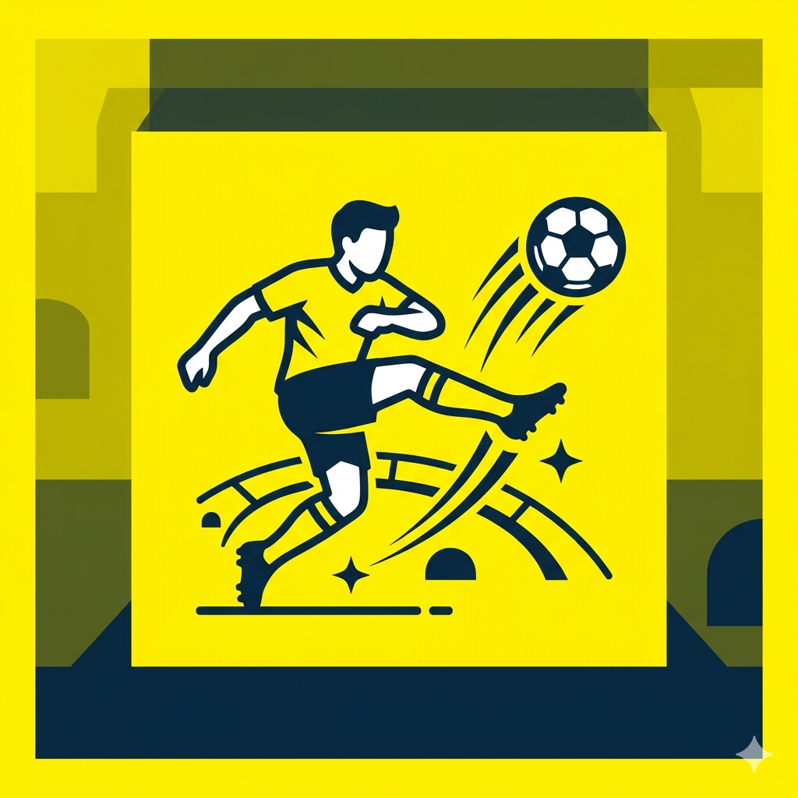

A Copa do Mundo FIFA™ 2026
Por: Fellipe Bittencourt
Copa do Mundo FIFA™ de 2026: novo formato e caminho até o Mundial
A Copa do Mundo FIFA™ de 2026 marcará uma nova era do futebol mundial. Pela primeira vez, o torneio contará com 48 seleções e será realizado em três países-sede: Canadá, Estados Unidos e México. A ampliação do número de participantes torna a competição ainda mais diversa e oferece oportunidades para mais países disputarem o principal torneio do futebol.
No novo formato, as 48 seleções são distribuídas em 12 grupos de quatro equipes. As duas melhores colocadas de cada grupo avançam para a fase eliminatória, juntamente com os oito melhores terceiros colocados. A partir daí, a competição segue em partidas de mata-mata até a grande final.
A classificação para a Copa acontece por meio das eliminatórias organizadas pelas confederações continentais. Cada continente recebe um número de vagas definido pela FIFA, e as seleções disputam torneios classificatórios em suas respectivas regiões. Além disso, os países-sede garantem vaga automática no Mundial.
Com mais equipes, mais jogos e uma abrangência global ainda maior, a Copa do Mundo FIFA™ de 2026 promete ser uma das edições mais inclusivas e emocionantes da história do futebol.
Fonte: Wikipedia